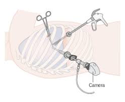
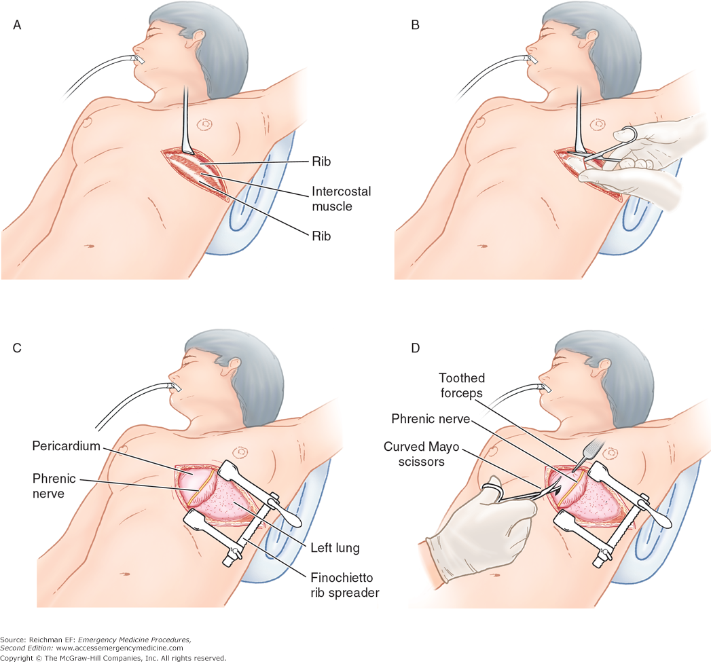
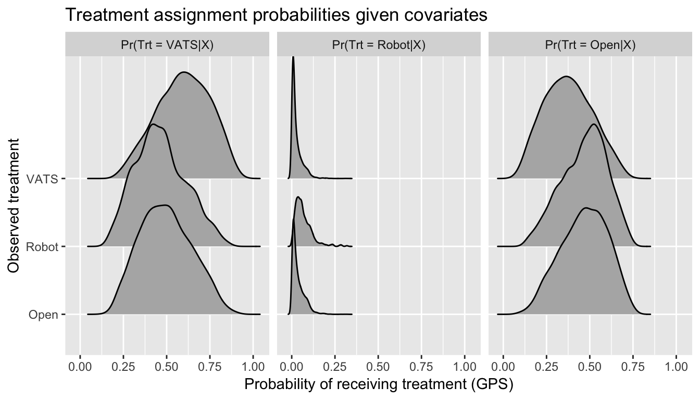
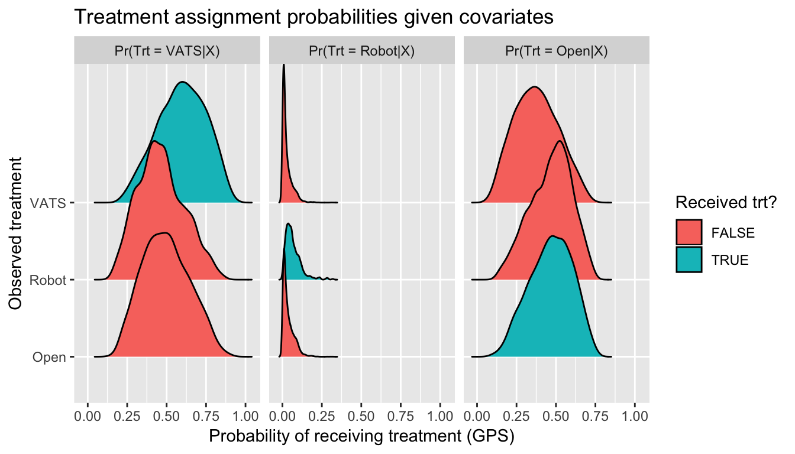
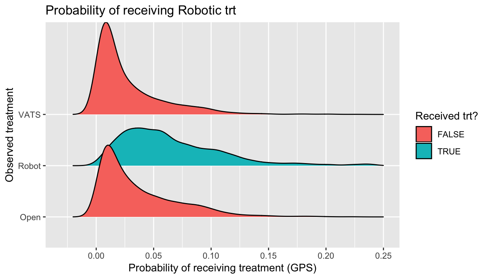
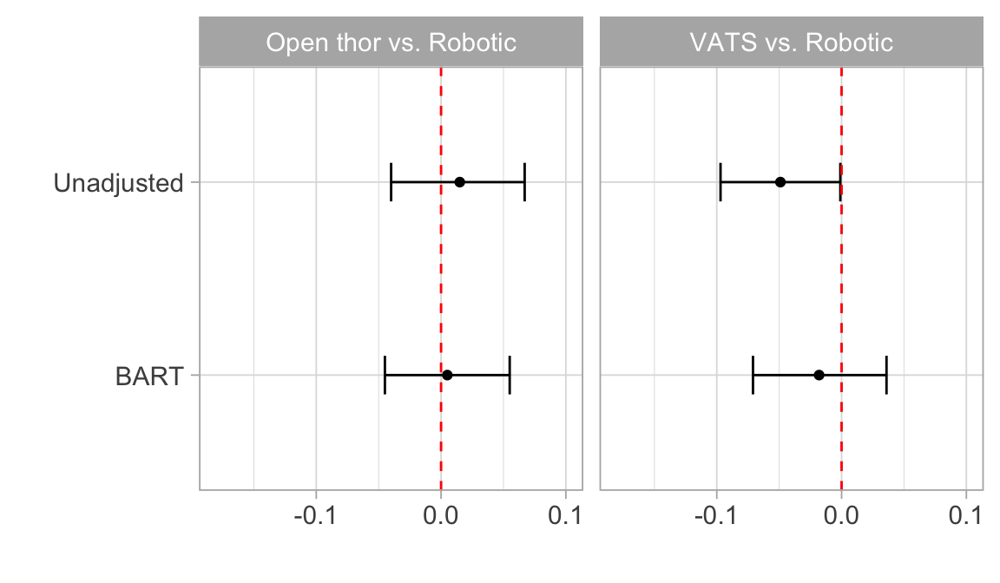

3 lung cancer treatments
Video assisted (VATS)

3 lung cancer treatments
Open thorectomy

3 lung cancer treatments
Robotic assisted
3 lung cancer treatments
| White race |
0.808 |
0.865 |
0.873 |
| Highest income |
0.245 |
0.324 |
0.202 |
| Stage 3 cancer |
0.096 |
0.134 |
0.082 |
3 lung cancer treatments
| White race |
0.808 |
0.865 |
0.873 |
| Highest income |
0.245 |
0.324 |
0.202 |
| Stage 3 cancer |
0.096 |
0.134 |
0.082 |
| Complications |
0.308 |
0.357 |
0.303 |
3 lung cancer treatments

Issue 1: Selection bias

Issue 2: Non-overlapping distributions
Issue 3: Large weights

Notation
Consider causal effect of \(A \in \{1, \ldots, Z\}\) on binary outcome \(Y \in \{0,1\}\)
- \(i = 1, \ldots, n\) for \(n\) total subjects
- \(n = n_1 + \ldots + n_Z\)
- \(\{Y_i(1), \ldots, Y_i(Z)\}\) as potential outcomes for \(i\)
- Covariates \(X_i\)
Notation
Interest: average treatment effect among treated
- \(ATT_{1|1, a}\): effect of \(T = 1\) versus \(T = a\) among those with \(T = 1\)
- \(ATT_{1|1, a}\) = \(\frac{1}{n_1} \sum_{i:A_i = 1} (Y_i(1) - Y_i(a))\) for \(a = \{2, \ldots, Z\}\)
- Ex: \(Z\) = 3, \(ATT_{1| 1, 2}\), \(ATT_{1| 1, 3}\), \(ATT_{1| 2, 3}\)
- \(ATT_{1|1, 2}\) = \(\frac{1}{n_1} \sum_{i:A_i = 1} (Y_i(1) - Y_i(2))\)
- \(ATT_{1|1, 3}\) = \(\frac{1}{n_1} \sum_{i:A_i = 1} (Y_i(1) - Y_i(3))\)
- \(ATT_{1|2, 3}\) = \(\frac{1}{n_1} \sum_{i:A_i = 1} (Y_i(2) - Y_i(3))\)
Causal inference with multiple treatments
Why not binary approaches?
- May not fully account for differences in patient characteristics
- Comparisons of disctinct cohorts with dissimilar characteristics
- Challenging to identify optimal treatment
- Main issue: matching on scalar alone insufficient
- See Lopez & Gutman, 2017 for more
Causal inference with multiple treatments
Bayesian Additive Regression Trees
Why BART for causal inference? see Hill, 2012
- Flexibly models response surface ✔️
- Large number of continuous and categorical predictors ✔️
- No ambiguity with respect to balance assessment ✔️
- Accessibility ✔️
- Accuracy ✔️
Bayesian Additive Regression Trees
Why BART for multiple treatments?
- Coherent posterior intervals ❓
- Heterogenous treatment effects ❓
- Accessibility ❓
- Accuracy ❓
Simulation study
6 factorial design using dbarts package in R
- Ratio of \(n_1\) : \(n_2\) : \(n_3\)
- \(n\)
- No. of predictors
- \(P(A|X)\)
- Predictor strength alignment
- Response surfaces (parallel?)
3 lung cancer treatments
ATT’s: generalizable to population receiving robotic treatment


Comments